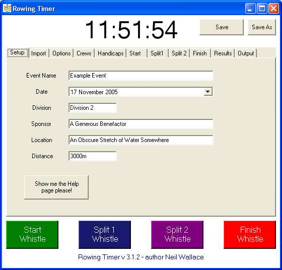

Getting Started
Below is the screen you are presented with when the main program loads.
You are presented with text boxes to enter the name of the event, the date, etc.. here.
You will notice a big "Clock" at the top. This is the time taken from your PC.
If you are using more than one PC (or if you are using my Pocket PC software) to gather up times then it is imperative that all these machines have
their internal clocks set as accurately as possible.
A good way of doing this is using one of the on-line clock setting websites.
Windows XP has such a link built into the system. (Right click on your clock - choose "Adjust Date/Time" and click on the "internet time" tab
for more information)
Obviously all "backup" timing devices should also be displaying the same time.
Suitable backup devices include wristwatches, mobile phones, video recorders, or even the local church clock!"
We used to use stopwatches... and huddle around to start them all off together.
That approach has different problems, and no way of re-synchronising after a malfunction.
Using the time in a format we all understand makes much more sense.
